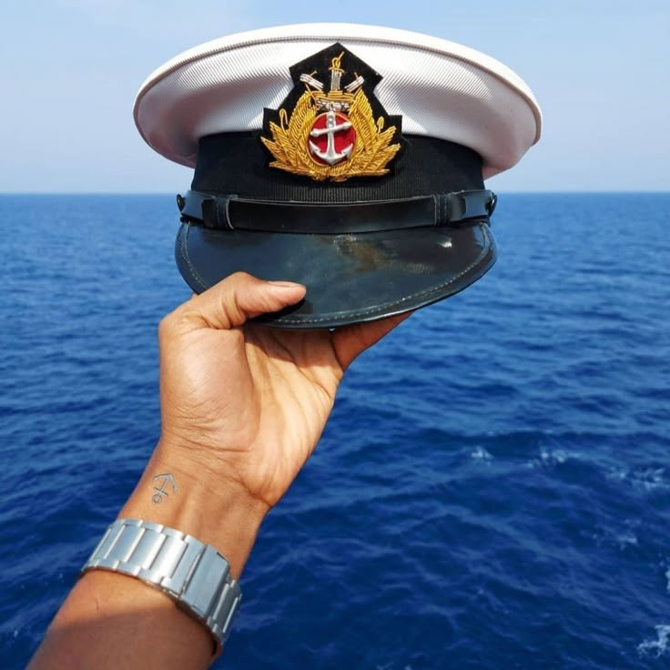
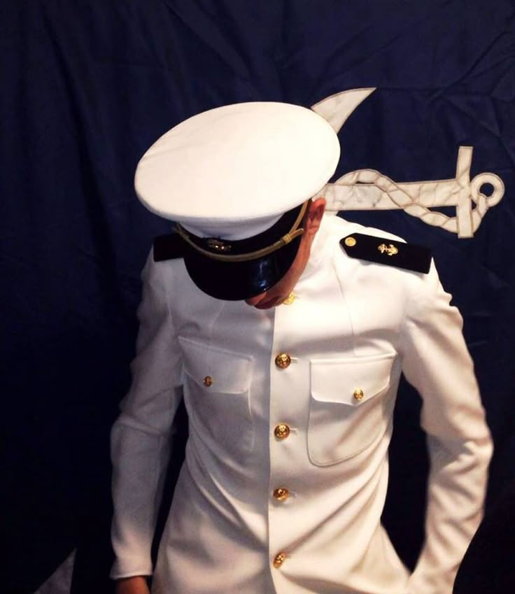
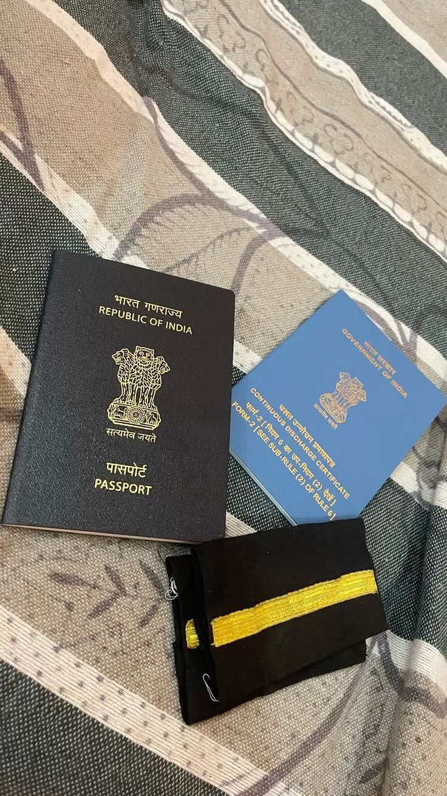

Program
DNS at IMI Noida
Merchant Navy Journey
Currently pursuing Diploma in Nautical Science (DNS) at IMI Noida, with sponsorship from Fleet Management. My path is centered on discipline, seamanship, and leadership for life at sea.
Current Focus:
DNS at IMI Noida
Fleet Management
Grow into a dependable deck officer

About Me
I am Sumit Kumar from Lakhisrai, Bihar. What started as a curiosity for growth has now become a clear life direction: serving in the Merchant Navy with professionalism and responsibility.
After completing Class 12 in 2025, I committed fully to maritime training. Today, I am building my technical, physical, and mental readiness through DNS at IMI Noida.
I believe every challenge is an opportunity to sharpen character. My long-term vision is to become a trusted officer known for discipline, teamwork, and safety-first decision making.
Professional Journey
Structured training in navigation fundamentals, seamanship practices, maritime regulations, and professional conduct at sea.
Backed by Fleet Management, strengthening my commitment to high standards, consistency, and long-term professional growth.
Preparing to contribute as a reliable officer through skill, discipline, communication, and safety-centered execution.
Completed Class 12 and chose the Merchant Navy career path.
Pursuing DNS at IMI Noida with sponsorship from Fleet Management.
Progressing toward sea-time experience and officer-level responsibility.
Sea Vision
A curated set of visuals that reflect the scale, discipline, and spirit of life connected to the sea.



Core Strengths
Consistent routines, accountability, and respect for systems.
Comfortable with challenges and ready to adjust in dynamic situations.
Strong collaboration mindset with clear and respectful communication.
Always learning, improving, and moving with purpose.